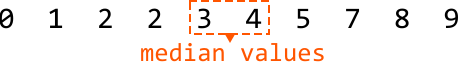

Median of an Integer Stream
MediumDesign a data structure that supports adding integers from a data stream and retrieving the median of all elements received at any point.
add(num: int) -> None: adds an integer to the data structure.get_median() -> float: returns the median of all integers so far.
Example:
Input: [add(3), add(6), get_median(), add(1), get_median()]
Output: [4.5, 3.0]
Explanation:
add(3) # data structure contains [3] when sorted
add(6) # data structure contains [3, 6] when sorted
get_median() # median is (3 + 6) / 2 = 4.5
add(1) # data structure contains [1, 3, 6] when sorted
get_median() # median is 3.0
Constraints:
- At least one value will have been added before
get_medianis called.
Intuition
The median is always found in the middle of a sorted list of values. The challenge with this problem is that it’s unclear how to keep all the values sorted as new values arrive, since the values don’t necessarily arrive in sorted order.
A useful point to recognize is that we don’t necessarily care if all the values are sorted. What really matters is that the median values are in their sorted positions. But is it possible to position these values in the middle without maintaining a fully sorted list of values? If it is, we’d need to find a way to differentiate the median values from the rest.
Consider the elements below, which contain an even number of values arranged in sorted order. The two values used to calculate the median are highlighted in the middle:

When a list contains two median values, we can make the following observations:
- The first median is the largest value in the left half of the sorted integers.
- The second median is the smallest value in the right half of the sorted integers.
![Image represents a visual explanation of a coding pattern, likely related to sorting or searching algorithms. A sequence of numbers (0, 1, 2, 2, 3, 4, 5, 7, 8, 9) is displayed, divided into two halves by a dashed orange line separating '3' and '4'. The left half (0, 1, 2, 2, 3) is highlighted in light purple, and the right half (4, 5, 7, 8, 9) is in light blue. A purple arrow points from the left half to the number '3', labeled 'largest of left half,' indicating that '3' is the largest element in the left subsequence. Similarly, a light blue arrow points from the right half to the number '4', labeled 'smallest of right half,' showing '4' as the smallest element in the right subsequence. The arrangement visually demonstrates the concept of finding the largest and smallest elements within partitioned sections of a dataset.](images/08_03_median-of-an-integer-stream-img-fac2d775.svg)
If we had a way to split the data into two halves, with one half containing the smaller values and the other half containing the larger values, we would just need an efficient method to identify the largest value in the smaller half, and the smallest value in the larger half. This is where heaps come in.
We can use a combination of a min-heap and a max-heap:
- A max-heap manages the left half, where the top value represents the first median value.
- A min-heap manages the right half, where the top value represents the second median value.
If the total number of elements is odd, there’s only one median. In this case, we just need to use one of the heaps to store it. Let's designate the max-heap to store this median:
![The image represents a visual depiction of finding the median of a dataset. Two rectangular boxes are shown, horizontally adjacent. The left box, colored light purple, contains the numbers 0, 1, 2, 2, and 3. The number 3 is enclosed within a dashed orange box, indicating it's the focus. The right box, colored light blue, contains the numbers 4, 5, 7, and 8. A downward-pointing orange arrow extends from the dashed box around the number 3 in the left box to the word 'median' written in orange below the boxes. This illustrates that the number 3 is identified as the median of the complete dataset (0, 1, 2, 2, 3, 4, 5, 7, 8) because it's the middle value when the dataset is sorted in ascending order.](images/08_03_median-of-an-integer-stream-img-8121070a.svg)
Populating the heaps
Before identifying how we populate each heap, it’s useful to understand the behavior they must follow. Here are a couple of observations we can make:
-
All values in the left half must be less than or equal to any value in the right half.
-
The two halves should contain an equal number of values, except when the total number of values is odd, in which case the left half has one more value, as specified earlier.
These observations help us define two rules for managing the heaps:
-
The maximum value of the max-heap (left half) must be less than or equal to the minimum value of the min-heap (right half), ensuring all values in the left half are less than or equal to those in the right half.
-
The heaps should be of equal size, but the max-heap can have one more element than the min-heap.
Let's figure out how to maintain these rules in an example in which we try to add number 3 to the heaps. Note, the heaps before adding this number meet the above rules.
![Image represents a visual depiction of two data structures, labeled 'left_half' and 'right_half,' likely illustrating a sorting or merging algorithm. The 'left_half' structure is a trapezoidal shape outlined in cyan, containing the numbers 0, 1, 2, 2, and 4 arranged in a roughly triangular fashion. Above this trapezoid, a cyan rectangle displays 'max: 4,' indicating the maximum value within the structure. Below the trapezoid, 'size = 5' specifies the number of elements. The 'right_half' structure mirrors this, but is outlined in purple and contains the numbers 5, 7, 8, and 9, arranged similarly. A purple rectangle above this trapezoid shows 'min: 5,' indicating the minimum value. Below the trapezoid, 'size = 4' indicates the number of elements. The two structures are positioned side-by-side, suggesting they are separate parts of a larger data set, possibly before or after a merging operation in a merge sort algorithm.](images/08_03_median-of-an-integer-stream-img-9ab5c860.svg)
Since 3 is less than the maximum value of left_half (4), it belongs in the left_half heap. So, let’s add 3 to this heap:
![Image represents a visual depiction of data splitting into two halves, labeled 'left_half' and 'right_half'. The 'left_half' is enclosed in a light-blue trapezoidal shape containing the numbers 0, 2, 2, 1, and a highlighted 3, suggesting a possible median or pivot point. Above this trapezoid, a light-blue rectangle displays 'max: 4', indicating the maximum value within the left half. Below the trapezoid, 'size = 6' specifies the number of elements. The 'right_half' is similarly structured, using a purple trapezoid containing the numbers 7, 8, and 9. A purple rectangle above it shows 'min: 5', representing the minimum value in this half. Below the trapezoid, 'size = 4' indicates the number of elements. The two halves are presented side-by-side, illustrating a potential data partitioning step in an algorithm, possibly related to sorting or searching, where the data is divided based on a pivot value.](images/08_03_median-of-an-integer-stream-img-bb9ad857.svg)
After adding 3, we notice rule 2 has been violated, since the size of the left_half heap is more than one element larger than the right_half heap. We can fix this by moving the max value of left_half to right_half:
![Image represents a visual depiction of a data transformation process, likely within a sorting or merging algorithm. The image shows two stages. The initial stage displays two trapezoidal data structures labeled 'left_half' and 'right_half,' outlined in cyan and violet respectively. The 'left_half' structure contains the numbers 0, 1, 2, 2, 3, with a 'size = 6' label indicating its element count, and a separate box labeled 'max: 4' showing the maximum value (though 4 is not present in the structure itself, suggesting a prior step). Similarly, 'right_half' contains 7, 8, 9, with a 'size = 4' label and a 'min: 5' box indicating its minimum value. A dashed arrow connects the 'max' box of 'left_half' to the 'min' box of 'right_half,' suggesting a comparison or data transfer between these maximum and minimum values. The second stage, shown after a thick black arrow, depicts the transformed data structures. The 'left_half' now contains 0, 1, 2, 2, 3, with 'size = 5' and 'max: 3,' while 'right_half' contains 5, 7, 8, 9, with 'size = 5' and 'min: 4.' The transformation suggests a redistribution of elements based on the initial maximum and minimum comparisons, potentially indicating a step in a merge sort or similar algorithm.](images/08_03_median-of-an-integer-stream-img-fa0bfc3d.svg)
So, to ensure the sizes of the heaps don’t violate rule 2, we need to rebalance the heaps after adding a value:
- If the
left_halfheap's size exceeds theright_halfheap’s size by more than one, rebalance the heaps by transferringleft_half‘s top value toright_half:
![Image represents a visual explanation of balancing a data structure, likely a binary tree or similar. The left side shows an 'imbalanced' state depicted by a tall, light-blue rectangle divided into four equal sub-rectangles, labeled 'size(left_half)' at the bottom, representing a larger left subtree. A small, dark-filled square is present at the top of this rectangle. A curved arrow originates from this square and points to a smaller, light-purple rectangle divided into two equal sub-rectangles, labeled 'size(right_half)' at the bottom, representing a smaller right subtree. This illustrates an uneven distribution of data. A large black arrow points to the right, indicating a transformation. The right side shows a 'balanced' state with two rectangles of approximately equal height; one light-blue rectangle, labeled 'size(left_half)', and one light-purple rectangle, labeled 'size(right_half)'. The dashed lines around the purple rectangle on the left suggest that this portion is being moved or redistributed to achieve balance. The overall image demonstrates the process of rebalancing a data structure to improve efficiency or performance.](images/08_03_median-of-an-integer-stream-img-dac39e88.svg)
- If the
right_halfheap’s size exceeds theleft_halfheap’s size, rebalance the heaps by transferring its top value to theleft_half:
![Image represents a visual depiction of balancing a data structure, likely a binary tree or similar. The left side, labeled 'imbalanced:', shows two vertically stacked rectangles representing data partitions. The left rectangle, light blue with a cyan border, is labeled 'size(left_half)' and is smaller than the right rectangle, light purple with a violet border, labeled 'size(right_half)'. A black arrow points from the left rectangle's top to a point near the top of the right rectangle, indicating a transfer or redistribution of data. A large black arrow points from the 'imbalanced:' section to the 'balanced:' section. The right side, labeled 'balanced:', shows the result of the data redistribution. Both rectangles are now roughly equal in size; the left rectangle (light blue with a cyan border and labeled 'size(left_half)') and the right rectangle (light purple with a violet border and labeled 'size(right_half)') are visually similar in height, suggesting a more balanced distribution of data. The overall diagram illustrates a before-and-after scenario of a balancing operation, highlighting the improvement in data structure distribution.](images/08_03_median-of-an-integer-stream-img-eea4ff87.svg)
Returning the median
With the median values at the top of the heaps, returning the median boils down to two cases:
-
If the total number of elements is even, both median values can be found at the top of each heap. So, we return their sum divided by 2.
-
If the total number of elements is odd, the median will be at the top of the
left_halfheap.
[Interactive code editor — visit bytebytego.com to run]
Implementation
Note that in Python, heaps are min-heaps by default. To mimic the functionality of a max-heap, we can insert numbers as negatives in the left_half heap. This way, the largest original value becomes the smallest when negated, positioning it at the top of the heap. When we retrieve a value from this heap, we multiply it by -1 to get its original value.
import heapq
class MedianOfAnIntegerStream:
def __init__(self):
# Max-heap for the values belonging to the left half.
self.left_half = []
# Min-heap for the values belonging to the right half.
self.right_half = []
def add(self, num: int) -> None:
# If 'num' is less than or equal to the max of 'left_half', it belongs to the
# left half.
if not self.left_half or num <= -self.left_half[0]:
heapq.heappush(self.left_half, -num)
# Rebalance the heaps if the size of the 'left_half' exceeds the size of
# the 'right_half' by more than one.
if len(self.left_half) > len(self.right_half) + 1:
heapq.heappush(self.right_half, -heapq.heappop(self.left_half))
# Otherwise, it belongs to the right half.
else:
heapq.heappush(self.right_half, num)
# Rebalance the heaps If 'right_half' is larger than 'left_half'.
if len(self.left_half) < len(self.right_half):
heapq.heappush(self.left_half, -heapq.heappop(self.right_half))
def get_median(self) -> float:
if len(self.left_half) == len(self.right_half):
return (-self.left_half[0] + self.right_half[0]) / 2.0
return -self.left_half[0]
import { MaxPriorityQueue } from './helpers/heap/MaxPriorityQueue.js'
import { MinPriorityQueue } from './helpers/heap/MinPriorityQueue.js'
export class MedianOfAnIntegerStream {
constructor() {
// Max-heap for the values belonging to the left half.
this.leftHalf = new MaxPriorityQueue((n) => n)
// Min-heap for the values belonging to the right half.
this.rightHalf = new MinPriorityQueue((n) => n)
}
add(num) {
// If 'num' is less than or equal to the max of 'leftHalf', it belongs to the left half.
if (this.leftHalf.isEmpty() || num <= this.leftHalf.front()) {
this.leftHalf.enqueue(num)
// Rebalance: if leftHalf has more than one extra element
if (this.leftHalf.size() > this.rightHalf.size() + 1) {
this.rightHalf.enqueue(this.leftHalf.dequeue())
}
} else {
// Otherwise, it belongs to the right half.
this.rightHalf.enqueue(num)
// Rebalance: if rightHalf has more elements than leftHalf
if (this.rightHalf.size() > this.leftHalf.size()) {
this.leftHalf.enqueue(this.rightHalf.dequeue())
}
}
}
get_median() {
if (this.leftHalf.size() === this.rightHalf.size()) {
return (this.leftHalf.front() + this.rightHalf.front()) / 2.0
}
return this.leftHalf.front()
}
}
import java.util.PriorityQueue;
import java.util.Collections;
class MedianOfAnIntegerStream {
// Max-heap for the values belonging to the left half.
private PriorityQueue leftHalf;
// Min-heap for the values belonging to the right half.
private PriorityQueue rightHalf;
public MedianOfAnIntegerStream() {
leftHalf = new PriorityQueue<>(Collections.reverseOrder());
rightHalf = new PriorityQueue<>();
}
public void add(Integer num) {
// If 'num' is less than or equal to the max of 'leftHalf', it belongs to the
// left half.
if (leftHalf.isEmpty() || num <= leftHalf.peek()) {
leftHalf.offer(num);
// Rebalance the heaps if the size of the 'leftHalf' exceeds the size of
// the 'rightHalf' by more than one.
if (leftHalf.size() > rightHalf.size() + 1) {
rightHalf.offer(leftHalf.poll());
}
} else {
// Otherwise, it belongs to the right half.
rightHalf.offer(num);
// Rebalance the heaps If 'rightHalf' is larger than 'leftHalf'.
if (rightHalf.size() > leftHalf.size()) {
leftHalf.offer(rightHalf.poll());
}
}
}
public Double getMedian() {
if (leftHalf.size() == rightHalf.size()) {
return (leftHalf.peek() + rightHalf.peek()) / 2.0;
}
return (double) leftHalf.peek();
}
}
Complexity Analysis
Time complexity:
- The time complexity of
addis O(log(n)), where n denotes the number of values added to the data structure. This is because we first push a number to one of the heaps, which takes O(log(n)) time. Then, if rebalancing is required, we also pop from one heap and push to the other, where both operations also take O(log(n)) time. - The time complexity of
get_medianis O(1) because accessing the top element of a heap takes O(1) time.
Space complexity: The space complexity is O(n) because the two heaps together store n elements.
Note: this explanation refers to the two middle values as "median values" to keep things simple. However, it’s important to understand that these two values aren’t technically “medians,” as there's only ever one median. These are just the two values used to calculate the median.